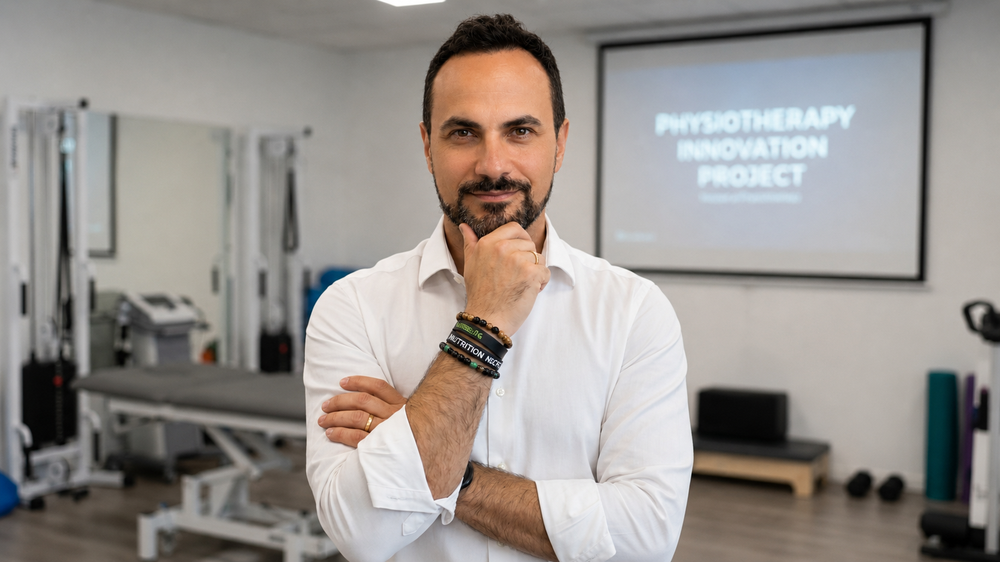
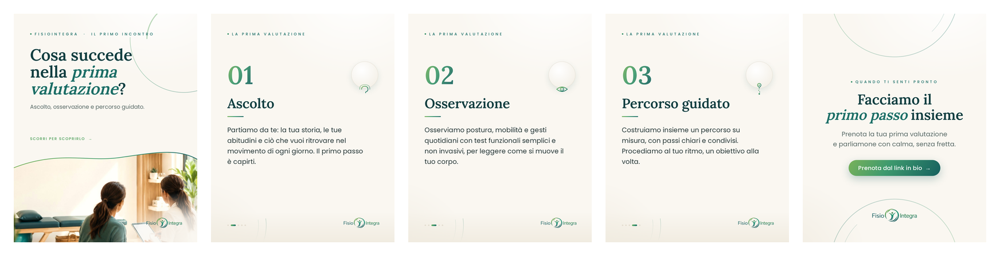
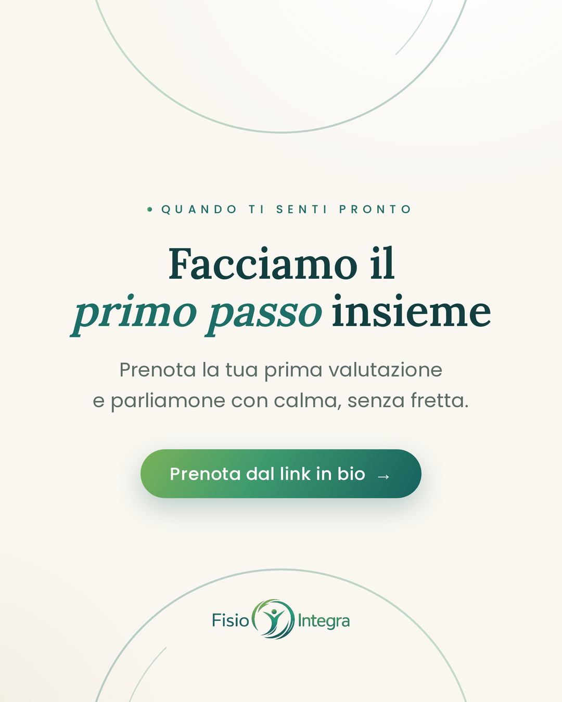

Visual system · Content strategy · Piano editoriale
Un sistema grafico che comunica il movimento, non solo il dolore.
Visual identity applicata, piano editoriale e calendario strategico per FisioIntegra: una comunicazione professionale, rassicurante e umana attorno a prevenzione, riabilitazione ed educazione al movimento.
Le regole del sistema FisioIntegra
Un'unica grammatica visiva: logo, palette, tipografia, stile fotografico ed elementi ricorrenti che rendono ogni contenuto riconoscibile come parte dello stesso brand.
Logo & clear space
Logo originale su fondo crema e su fondo petrolio. Mantenere sempre uno spazio di rispetto pari all'altezza del simbolo. Non distorcere, non ruotare, non cambiare i colori. Sui fondi scuri a basso contrasto usare il logo dentro una pastiglia crema.
Palette ufficiale
Tipografia
Stile fotografico



Elementi grafici ricorrenti
Regole di layout
- Molto spazio bianco: il contenuto respira, mai saturo.
- Gerarchia fissa: occhiello → titolo → sottotitolo.
- Curve morbide ispirate al movimento come firma visiva.
- Foto a tutto campo o in contenitori a bordi arrotondati.
- Ritmo del feed: alternanza fondi chiari e fondi petrolio.
- Numeri solo dove esiste una vera sequenza (percorso, slide).
- Testi sempre leggibili da mobile, frasi brevi.
- Footer costante: logo + handle in ogni contenuto.
Sistema progettato e prototipato nel contesto del Project Work LUM. Dati, KPI e proiezioni del planner sono ipotesi simulate a fini didattici: il setup creativo non equivale a una validazione di mercato.
Spot di presentazione FisioIntegra
Un contenuto video pensato per raccontare movimento, ascolto, prevenzione e fiducia attraverso un tono professionale, umano e rassicurante.
Lo spot è un contenuto progettuale sviluppato da Socialin Communication / Federica Creative come proposta narrativa per il caso FisioIntegra.
Griglia 3×3 coerente
Nove contenuti pensati per convivere nella stessa griglia: l'alternanza tra fondi chiari e petrolio crea ritmo, mentre la curva del movimento e la tipografia li tengono insieme.
Ascolto del corpo, percorsi guidati, educazione al movimento.
📍 Studio Giovanni Cavone · Colloquio informativo in DM
Logica della griglia
- 01
Reel · Il dolore è un segnale — apertura emotiva ma non drammatica.
- 02
Carosello · Prima valutazione — il metodo, passo dopo passo.
- 03
Infografica · Le fasi del percorso — la sequenza guidata.
- 04
Educativo · Giornata sedentaria — abitudini quotidiane.
- 05
Reel · Pausa attiva — movimento, energia controllata.
- 06
Falso mito · Postura — sfatare un'idea comune.
- 07
Sport · Tornare allo sport — riabilitazione e gradualità.
- 08
Story quiz · Postura perfetta — interazione.
- 09
CTA · Da dove iniziare — colloquio informativo.
Diagonali di fondi petrolio e contenuti chiari: la griglia resta ordinata anche aggiungendo nuovi post, perché ogni casella segue la stessa regola di alternanza.
I 9 template del sistema
Formato reale: 1080×1350 px per i post feed (4:5) e 1080×1920 px per Reel cover e Stories (9:16). Ogni template è modificabile e usa le foto caricate.

È UN SEGNALE

NELLA PRIMA
VALUTAZIONE?
È UNA SERIE
DI SEDUTE

DELLA GIORNATA
SEDENTARIA
ATTIVA
per ripartire.

SEMPRE DRITTO?»

ALLO SPORT
esiste davvero?

DA DOVE
INIZIARE?
«La prima valutazione» — 6 slide
Un carosello che racconta il metodo passo dopo passo, dalla copertina alla call to action. Stessa griglia, stessa curva, numerazione reale perché c'è una sequenza.
e di movimento
4 Stories collegate
Una mini-sequenza verticale (9:16): hook → spunto educativo → quiz interattivo → call to action. Barra di avanzamento e spazio per gli sticker nativi di Instagram.
IL CORPO
è un messaggio
esiste davvero?
INSIEME
Calendario editoriale settimanale
Dashboard orizzontale, pulita e modificabile: pilastri di contenuto, formato, stato di lavorazione e KPI. I valori mostrati sono ipotesi simulate a scopo dimostrativo.
| Giorno | Pilastro | Contenuto | Formato | Orario | Stato |
|---|---|---|---|---|---|
|
Lun14 apr
|
Educazione | Il dolore è un segnaleReel cover · hook emotivo | Reel | 18:30 | Pubblicato |
|
Mar15 apr
|
Metodo | Cosa succede nella prima valutazioneCarosello 6 slide | Carosello | 13:00 | Pubblicato |
|
Mer16 apr
|
Prevenzione | 5 errori della giornata sedentariaPost educativo | Post 4:5 | 18:00 | Pubblicato |
|
Gio17 apr
|
Community | Quiz: la postura perfetta esiste?Stories interattive · sondaggio | Stories | 11:00 | Pubblicato |
|
Ven18 apr
|
Educazione | Falso mito: «devi stare sempre dritto»Post falso mito | Post 4:5 | 18:30 | In lavorazione |
|
Sab19 apr
|
Sport | Tornare allo sportReel cover · riabilitazione | Reel | 10:30 | In lavorazione |
|
Dom20 apr
|
CTA | Vuoi capire da dove iniziare?Post CTA · colloquio informativo | Post 4:5 | 11:00 | Pianificato |
Dashboard del piano editoriale
Una lettura sintetica del sistema progettuale: formati, contenuti e touchpoint previsti.
Dashboard dimostrativa. I numeri descrivono l’organizzazione del sistema editoriale proposto e non rappresentano risultati, pubblicazioni effettive o performance misurate.
Prompt AI per i visual FisioIntegra
Prompt progettuali per generare o adattare visual coerenti con il sistema grafico, mantenendo una comunicazione professionale, rassicurante e non sensazionalistica.
- Formato 4:5
- Mantenere palette FisioIntegra
- Evitare stile ospedaliero
- Evitare dolore estremo e scene drammatiche
- Luce naturale, persone rilassate
- Lasciare spazio negativo per i testi
- No testo generato o watermark
- Formato 4:5
- Mantenere palette FisioIntegra
- Evitare stile ospedaliero
- Evitare dolore estremo e scene drammatiche
- Luce naturale, persone rilassate
- Lasciare spazio negativo per i testi
- No testo generato o watermark
- Formato 4:5
- Mantenere palette FisioIntegra
- Evitare stile ospedaliero
- Evitare dolore estremo e scene drammatiche
- Luce naturale, persone rilassate
- Lasciare spazio negativo per i testi
- No testo generato o watermark
- Formato 4:5
- Mantenere palette FisioIntegra
- Evitare stile ospedaliero
- Evitare dolore estremo e scene drammatiche
- Luce naturale, persone rilassate
- Lasciare spazio negativo per i testi
- No testo generato o watermark
- Formato 9:16
- Mantenere palette FisioIntegra
- Evitare stile ospedaliero
- Evitare dolore estremo e scene drammatiche
- Luce naturale, persone rilassate
- Lasciare spazio negativo per i testi
- No testo generato o watermark
- Formato 4:5
- Mantenere palette FisioIntegra
- Evitare stile ospedaliero
- Evitare dolore estremo e scene drammatiche
- Luce naturale, persone rilassate
- Lasciare spazio negativo per i testi
- No testo generato o watermark
- Formato 4:5
- Mantenere palette FisioIntegra
- Evitare stile ospedaliero
- Evitare dolore estremo e scene drammatiche
- Luce naturale, persone rilassate
- Lasciare spazio negativo per i testi
- No testo generato o watermark
- Formato 9:16
- Mantenere palette FisioIntegra
- Evitare stile ospedaliero
- Evitare dolore estremo e scene drammatiche
- Luce naturale, persone rilassate
- Lasciare spazio negativo per i testi
- No testo generato o watermark
- Formato 4:5
- Mantenere palette FisioIntegra
- Evitare stile ospedaliero
- Evitare dolore estremo e scene drammatiche
- Luce naturale, persone rilassate
- Lasciare spazio negativo per i testi
- No testo generato o watermark
Come leggere il sistema
Coerenza visiva
Logo, palette, curva del movimento, tipografia e fotografia costruiscono un linguaggio riconoscibile.
Flessibilità dei formati
I contenuti sono progettati per adattarsi a feed 4:5, Reel cover e Stories 9:16.
Comunicazione responsabile
Il sistema evita diagnosi, promesse di guarigione, toni drammatici e claim medici assoluti.
Misurazione futura
KPI, stati del planner e metriche sono criteri progettuali da validare in una futura fase operativa.
Il sistema visivo è un prototipo progettuale; il piano editoriale è una proposta operativa; numeri, KPI, stati del planner e metriche sono scenari dimostrativi e non dati reali di campagne già pubblicate.
Socialin Communication · Federica Creative
Project Work — LUM School of Management